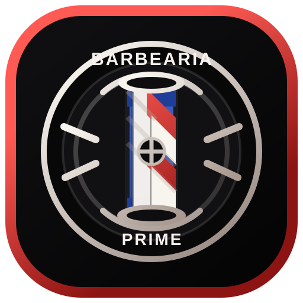

Corte social e degradê
Acabamento limpo, alinhamento preciso e volume na medida certa.

Barbearia Prime estilo com identidadeVisual pesado, acabamento limpo e atitude de rua. Chama no Instagram ou no WhatsApp e sai com a imagem na responsa.


Acabamento limpo, alinhamento preciso e volume na medida certa.
Contorno marcado, limpeza de nuca e definição que segura a presença.
Quando você quer sair pronto da cadeira com corte e barba em sincronia.
Ajuda para escolher um visual que combine com seu tipo de cabelo e rota.
Contato rápido, direto e sem burocracia para escolher seu horário.
O foco fica em entender sua imagem e executar com precisão.
Mais alinhado, mais confiante e pronto para publicar o resultado.
Use o feed para mostrar cortes reais, resultados e a atmosfera da barbearia. Aqui, a página já guia o visitante direto para seu perfil.
Mostre antes e depois, detalhes do acabamento e a evolução do cliente.
Compartilhe agenda, novidades, horários disponíveis e o clima da barbearia.
Transforme curiosidade em visita com um link direto para o seu Instagram.
Abrir Instagram Chamar no WhatsApp